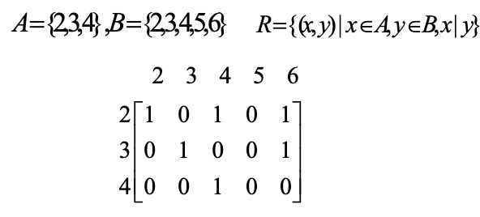
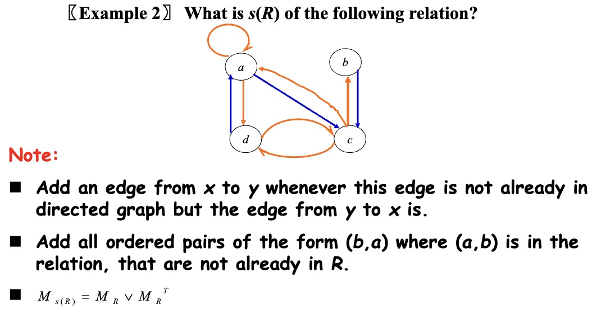

Chapter 09: Relations¶
Relations and Their Properties¶
Binary Relation¶
设 \(A\) 和 \(B\) 是集合，一个从 \(A\) 到 \(B\) 的二元关系（Binary Relation）是 \(A\times B\) 的子集。更一般地，设 \(A_1,A_2,...,A_n\) 是集合，一个关于 \(A_1,A_2,...,A_n\) 的 \(n\) 元关系是 \(A_1\times A_2\times...\times A_n\) 的子集。
Relations On A Set¶
集合 \(A\) 上的关系是从 \(A\) 到 \(A\) 的关系。
可以用一个 \(m\times n\) 的连接矩阵 \(M_R=[m_{ij}]\) 来表示集合 \(A=\{a_1,a_2,...,a_m\}\) 和 \(B=\{b_1,b_2,...,b_n\}\) 之间的关系，其中 \(m_{ij}=\begin{cases}1,(a_i,b_j)\in R\\0,(a_i,b_j)\not\in R\end{cases}\)
e.g.

Properties of Binary Relations¶
- 自反性（Reflexive Relations）：若 \(\forall x(x\in A \rightarrow (x,x)\in R)\)，那么定义在集合 \(A\) 上的关系 \(R\) 称为自反的。
- 反自反性（Irreflexive Relations）：若 \(\forall x(x\in A\rightarrow (x,x)\not\in R)\) ，那么定义在集合 \(A\) 上的关系 \(R\) 称为反自反的。
- 对称性（Symmetric Relations）：若 \(\forall x\forall y((x,y)\in R\rightarrow (y,x)\in R)\) ，那么定义在集合 \(A\) 上的关系 \(R\) 称为对称的。
- 反对称性（Antisymmetric Relations）：若 \(\forall x\forall y((x,y)\in R \land (y,x)\in R\rightarrow x=y)\)，那么定义在集合 \(A\) 上的关系 \(R\) 称为反对称的。
- 传递性（Transitive Relations）：若 \(\forall x\forall y\forall z((x,y)\in R \land (y,z)\in R \rightarrow (x,z)\in R)\)，那么定义在集合 \(A\) 上的关系 \(R\) 称为传递的。
Combining Relations¶
设 \(A=\{a_1,a_2,...,a_n\},B=\{b_1,b_2,...,b_m\}，M_{R_1}=[c_{ij}],M_{R_2}=[d_{ij}]\)，通过连接矩阵来表示：
- \(M_{R_1\bigcup R_2}=[c_{ij}\lor d_{ij}]=M_{R_1}\lor M_{R_2}\)
- \(M_{R_1\bigcap R_2}=[c_{ij}\land d_{ij}]=M_{R_1}\land M_{R_2}\)
- \(M_{\overline{R_1}}=[\overline{c_{ij}}]\)
- \(M_{R_1-R_2}=M_{R_1\bigcap \overline{R_2}}=[c_{ij}\land \overline{d_{ij}}]\)
设 \(R\) 是从集合 \(A\) 到集合 \(B\) 的关系，\(S\) 是从集合 \(B\) 到集合 \(C\) 的关系。\(R\) 与 \(S\) 的合成是由有序对 \((a,c)\) 的集合构成的关系，其中 \(a\in A,c\in C\)，并且存在一个 \(b\in B\) 的元素，使得 \((a,b)\in R\) 且 \((b,c)\in S\)。我们用 \(S\circ R\) 表示 \(R\) 与 \(S\) 的合成。\(M_{R\circ S}=M_S\times M_R\)
The Power of a relation R¶
设 \(R\) 是集合 \(A\) 上的关系。\(R\) 的 \(n\) 次幂 \(R^n(n=1,2,3,...)\) 递归地定义为 \(R^1=R\) 和 \(R^{n+1}=R^n\circ R\)
定理：集合 \(A\) 上的关系 \(R\) 是传递的，当且仅当对 \(n=1,2,3,...\) 有 \(R^n\subseteq R\)
Inverse Relation¶
设 \(R\) 是从 \(A\) 到 \(B\) 的关系，那么其逆关系 \(R^{-1}/R^c=\{(b,a)|(a,b)\in R,a\in A,b\in B\}\)
逆关系具有如下性质：
- \((R\bigcup S)^{-1}=R^{-1}\bigcup S^{-1}\)
- \((R\bigcap S)^{-1}=R^{-1}\bigcap S^{-1}\)
- \(\overline{R}^{-1}=\overline{R^{-1}}\)
- \((R-S)^{-1}=R^{-1}-S^{-1}\)
- \((A\times B)^{-1}=B\times A\)
- \(\overline{R}=A\times B-R\)
- \((S\circ T)^{-1}=T^{-1}\circ S^{-1}\)
- \((R\circ T)\circ P=R\circ(T\circ P)\)
- \((R\bigcup S)\circ T=R\circ T\bigcup S\circ T\)
n-ary Relations and Their Applications¶
Representing Relations¶
Closures of Relations¶
What Is Closures of Relations¶
定义：设 \(R\) 是集合 \(A\) 上的关系，关系 \(R\) 具有性质 \(P\) 的闭包（Closure） 即为集合 \(A\) 上包含 \(R\) 的具有性质 \(P\) 的关系 \(S\) ，并且 \(S\) 是每一个包含 \(R\) 的具有性质 \(P\) 的 \(A\times A\) 的子集。（简单理解即为 \(R\) 的具有性质 \(P\) 的闭包就是把 \(R\) 与满足性质 \(P\) 的关系的集合取并）
Reflexive Closure¶
定义：设 \(R\) 是集合 \(A\) 上的关系，那么 \(R\) 的自反闭包（Reflexive Closure），记为 \(r(R)\) ，是 \(R\bigcup I_A\) （其中 \(I_A\) 即为 \(A\) 的对角关系，\(I_A=\{(x,x)|x\in A\}\)）
\(R=R\bigcup I_A\Leftrightarrow R\) 是一个自反闭包
e.g. \(R=\{(a,b)|a<b,a,b\in Z\}\)，求 \(R\) 的自反闭包。
Symmetric Closure¶
定义：设 \(R\) 是集合 \(A\) 上的关系，那么 \(R\) 的对称闭包（Symmetric Closure），记为 \(s(R)\) ，是 \(R\bigcup R^{-1}\) 。
\(R=R\bigcup R^{-1}\Leftrightarrow R\) 是一个对称闭包

Transitive Closure¶
定义：设 \(R\) 是集合 \(A\) 上的关系，那么 \(R\) 的传递闭包（Transitive Closure），记为 \(t(R)\) ，满足 \(\forall a\in A\space\forall b\in A\space a\) 可达 \(b\rightarrow (a,b)\in R\)

定理：设 \(R\) 是集合 \(A\) 上的关系，那么存在一条 \(a\) 到 \(b\) 长度为 \(n\) 的路径 \(\Leftrightarrow (a,b)\in R^n\)。

Connectivity Relation¶
定义：连通关系（Connectivity Relation）即为一个有序对 \((a,b)\) 的集合，满足在 \(R\) 中存在一个 \(a\) 到 \(b\) 的道路，记为 \(R^*\) 。
定理：
- \(t(R)=R^*\)
- 如果 \(|A|=n\)，那么任何长度大于 \(n\) 的道路一定含有回环。
- 如果 \(|A|=n\) ，\(R\) 是集合 \(A\) 上的关系，那么 \(\exists k,k\leq n,R^*=R\bigcup R^2\bigcup...\bigcup R^k,t(R)=R^*=R\bigcup R^2\bigcup...\bigcup R^n\)
- \(M_{t(R)}=M_R\lor M_R^{[2]}\lor...\lor M_R^{[n]}\)
Warshall's Algorithm¶
内部顶点：对于一条从 \(a\) 到 \(b\) 的路径，除了起点 \(a\) 和终点 \(b\) 出现在路径中的所有顶点。
沃舍尔算法（Warshall's Algorithm）：构造一系列 0-1 矩阵 \(W_0,W_1,...,W_n\) ，其中 \(W_0=M_R,W_k=[\omega_{ij}^{(k)}]\)，其中如果存在一条从 \(v_i\) 到 \(v_j\) 的路径使得这条路径的所有内部顶点都在集合 \(\{v_1,v_2,...,v_k\}\) （前 \(k\) 个顶点）中，那么 \(\omega_{ij}^{(k)}=1\)，否则为 0（这条路径的起点和终点可能在集合之外），由定义可知 \(W_n=M_{t(R)}\)
引理：\(\omega_{ij}^{[k]}=\omega_{ij}^{[k-1]}\lor(\omega_{ik}^{[k-1]}\land\omega_{kj}^{[k-1]})\)
Equivalence Relations¶
Equivalence Relations¶
如果一个定义在集合 \(A\) 上的关系 \(R\) 是自反的、对称的和传递的，那么称关系 \(R\) 是等价关系（Equivalence Relations）。若两个元素 \(a\) 和 \(b\) 通过等价关系而关联，则称它们是等价的，记为 \(a\)~\(b\)。
Equivalence Class¶
设 \(R\) 是定义在集合 \(A\) 上的等价关系，与 \(A\) 中其中一个元素 \(a\) 有关系的所有元素的集合叫作 \(a\) 的等价类（Equivalence Class），记作 \([a]_R/[a]\)，由定义 \([a]_R=\{s|(a,s)\in R\}\)，如果 \(b\in [a]_R\)，那么称 \(b\) 为等价类的代表。
e.g. 模 3 同余的关系 \(R=\{(a,b)|a\equiv b(mod\space3),a,b\in Z\}\)，证明其是一个等价关系并指出其等价类。


Partition of a Set¶
令 \(\{A_1,A_2,...\}\) 是 \(A\) 的子集的组合。那么这个组合被称为 \(A\) 的划分（Partition，记作 \(pr(A)\)）当且仅当：
- \(A_i\not=\phi,i\in Z\)
- \(A_i\bigcap A_j=\phi,i\not=j\)
- \(\forall a\in A,\exists i, a\in A_i(i=1,2,...)\)
Equivalence Classes and Partitions¶
令 \(R\) 是一个集合 \(A\) 上的等价关系，定理：
- \(aRb\Leftrightarrow [a]=[b]\Leftrightarrow [a]\bigcap[b]\not=\phi\)
- \(R\) 的等价类是 \(A\) 的划分。反过来说，如果给定一个 \(A\) 的划分 \(\{A_i|i\in I\}\)，那么一定有一个对应的等价关系 \(R\)，使得其等价类为这个划分。
The Operations of Equivalence Relations¶
如果 \(R_1,R_2\) 是 \(A\) 的等价关系，定理：
- \(R_1\bigcap R_2\) 也是 \(A\) 的等价关系。
- \(R_1\bigcup R_2\) 是 \(A\) 的对称和自反关系。
- \((R_1\bigcup R_2)^*\) 也是 \(A\) 的等价关系。
Partial Orderings¶
Partial Orderings¶
令 \(R\) 是集合 \(S\) 上的关系，如果 \(R\) 是自反的、反对称的、传递的，那么称 \(R\) 为偏序（Partial Ordering/Partial Order），记为 \((S,R)\)。用记号 \(a\preccurlyeq b\) 来表示 \((a,b)\in R\)，\(a \prec b\) 表示 \((a,b)\in R,a\not=b\)，\(\preccurlyeq\) 表示所有的偏序，\((S,\preccurlyeq)\) 表示所有的偏序集。
设偏序集 \((S,\preccurlyeq)\) 中的元素 \(a,b\)，如果 \(a\preccurlyeq b\) 或 \(b\preccurlyeq a\) ，那么称 \(a\) 和 \(b\) 是可比的（Comparable）；否则为不可比的（Incomparable）。
如果 \((S,\preccurlyeq)\) 是偏序集，且 \(S\) 中的每对元素都是可比的，则 \(S\) 称为全序集或线序集（Totally Ordered Set/Linearly Ordered Set），\(\preccurlyeq\) 被称为全序或线序（Total Order/Linear Order），一个全序集也被称为链。
对于偏序集 \((S,\preccurlyeq)\) ，如果 \(\preccurlyeq\) 是全序，并且 \(S\) 的每个非空子集都有一个最小元素，就称其为良序集（Well-Ordered Set）。
良序归纳原理：设 \(S\) 是一个良序集。归纳步骤：对所有 \(y\in S\) ，如果 \(P(x)\) 对所有 \(x\in S\) 且 \(x\prec y\) 为真，\(P(y)\) 为真，结论为 \(P(x)\) 对所有 \(x\in S\) 为真
Lexicographic Order¶
对于两个偏序集 \((A_1,\preccurlyeq_1)\) 和 \((A_2,\preccurlyeq_2)\) ，那么在 \(A_1\times A_2\) 上的字典顺序（Lexicographic Order）\(\prec\) 定义为：\((a_1,a_2)\prec(b_1,b_2)\Leftrightarrow (a_1\prec_1b_1) \lor((a_1=b_1)\land(a_2\prec_2b_2))\)

Hasse diagrams¶
Chain and Antichain¶
设 \((A,\preccurlyeq)\) 是一个偏序集，\(B\subseteq A\)，如果 \((B,\preccurlyeq)\) 是一个全序集，那么 \(B\) 被称为 \((A,\preccurlyeq)\) 的链（Chain），链的长度为 \(|B|\)；如果 \(B\subseteq A\)，\(\forall a,b\in B(a\neq b),(a,b)\not\in R,(b,a)\not\in R\)，那么 \(B\) 被称为 \((A,\preccurlyeq)\) 的反链（Antichain）。
Maximal and Minimal Elements¶
设 \((A,\preccurlyeq)\) 是一个偏序集，如果不存在 \(b\in A\) 使得 \(a\prec b\)，那么 \(a\) 在偏序集 \((A,\preccurlyeq)\) 中是极大元（Maximal Elements）；如果不存在 \(b\in A\) 使得 \(b\prec a\)，那么 \(a\) 在偏序集 \((A,\preccurlyeq)\) 中是极小元（Minimal Elements）
Greatest and Least Element¶
设 \((A,\preccurlyeq)\) 是一个偏序集，如果对所有的 \(b\in A\) 有 \(b\preccurlyeq a\)，那么 \(a\) 在偏序集 \((A,\preccurlyeq)\) 中是最大元（Greatest Elements）；如果对所有的 \(b\in A\) 有 \(a\preccurlyeq b\)，那么 \(a\) 在偏序集 \((A,\preccurlyeq)\) 中是最小元（Least Elements）
定理：当最大/最小元存在时，它是唯一的。
Upper and Lower Bounds¶
设 \(A\) 是 \(S\) 的一个子集，如果 \(u\) 是 \(S\) 中的元素，使得对所有的元素 \(a\in A\) 有 \(a\preccurlyeq u\)，那么 \(u\) 被称为 \(A\) 的一个上界（Upper Bounds）；如果 \(u\) 是 \(S\) 中的元素，使得对所有的元素 \(a\in A\) 有 \(u\preccurlyeq a\)，那么 \(u\) 被称为 \(A\) 的一个下界（Lower Bounds）。
若任意 \(a\in A\) 有 \(a\preccurlyeq x\)，并且对于 \(A\) 的任意上界 \(z\) 有 \(x\preccurlyeq z\)，则 \(x\) 被称为 \(A\) 的最小上界（Least Upper Bounds），记作 \(lub(A)\)；如果 \(y\) 是 \(A\) 的下界，并且对于 \(A\) 的任意下界 \(z\)，有 \(z\preccurlyeq y\)，则 \(y\) 被称为 \(A\) 的最大下界（Greatest Lower Bounds），记作 \(glb(A)\)。
Lattices¶
如果一个偏序集的每对元素都有最小上界和最大下界，那么称这个偏序集为格（Lattices）
Topological Sorting¶
如果只要 \(aRb\) 就有 \(a\preccurlyeq b\)，则称一个全序 \(\preccurlyeq\) 与偏序 \(R\) 是相容的（Compatible）。从一个偏序构造一个相容的全序称为拓扑排序（Topological Sorting）。
引理：每个有穷非空偏序集 \((S,\preccurlyeq)\) 至少有一个极小元。